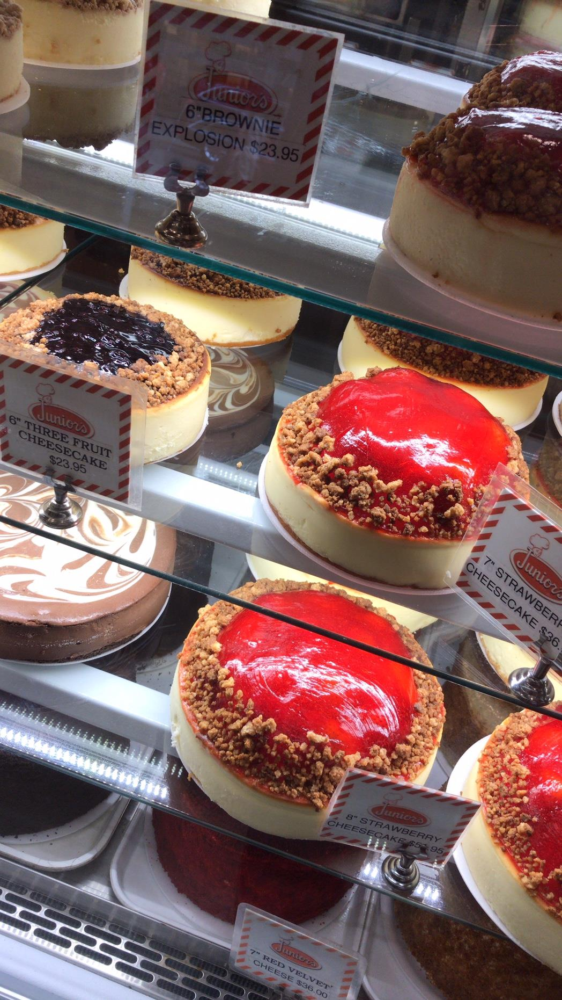
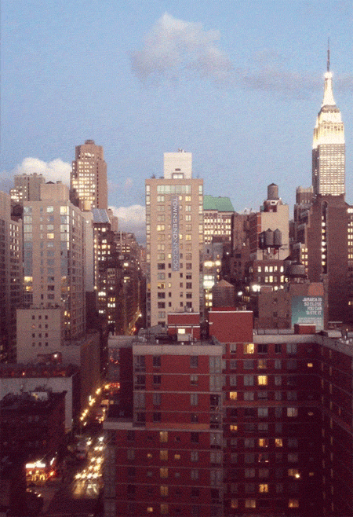
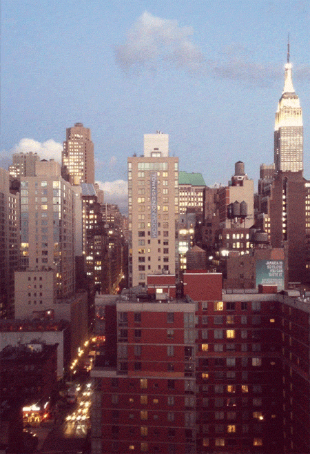

In questa sezione del sito potete vedere alcune delle foto che ho scattato quando ero in visita a New York. Enjoy :)
Questi siamo noi davanti al palazzo di vetro in pose un pò simpatiche dopo un'intera giornata seria di lavoro. Questo è il gruppo di Monza al completo, quello con cui siamo partiti per New York. Quì eravamo a central park. Questa sono io a Times Square davanti alla bandiera luminosa. Times Square da un'altra prospettiva. Dove andiamo? One way.

Ecco le cheesecakes! Il cielo di New York. La città dall'alto. Central park. Il "mac & cheese" una pasta tipica americana con tanto formaggio fuso. Eccoci all'ONU! Qua siamo nella sala dell'assemblea generale. Un'altra vista della città dall'alto.

 
